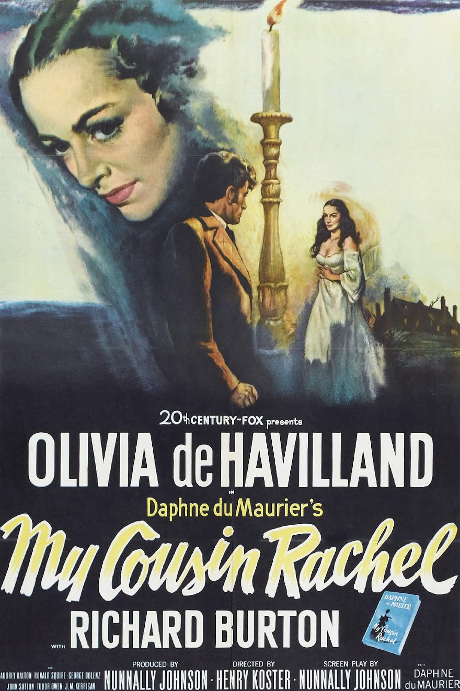

My Cousin Rachel
25th Academy Awards
(Oscars 1953)
4 Nominations, 0 Awards
| Nominations | ||
|---|---|---|
| Category | Nominees | Result |
| Actor in a Supporting Role | Richard Burton | Nominated |
| Cinematography (Black-and-White) | Joseph LaShelle | Nominated |
| Art Direction (Black-and-White) | John DeCuir, Lyle Wheeler, and Walter M. Scott | Nominated |
| Costume Design (Black-and-White) | Charles LeMaire and Dorothy Jeakins | Nominated |